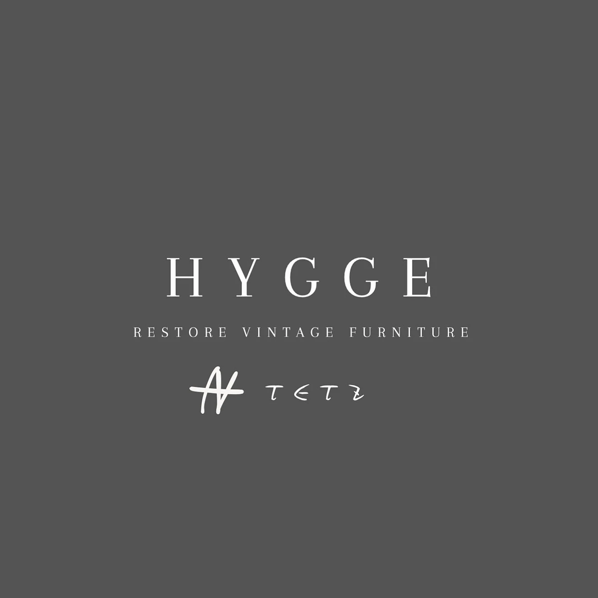

今日も、ぽんぽん。
材料も、見積も、スマートに。
今月の案件収益
在庫のチェック

材料を登録
新規登録した材料の購入支出は登録日で入出金・収支に反映されます。
防毒マスク本体などは「回」で使用回数按分できます。吸収缶の交換時期はメーカーの指示に従ってください。
登録済み材料
塗装面積と塗料使用量
📊 案件の収益
塗布量はメーカー仕様に合わせて入力してください。登録済みの希釈剤は単価を使って計算します。gとmlは密度が異なるため自動換算しません。
家具の塗装面積
かんたん概算と部品別の面積を計算できます。概算は実際の塗装面積と異なる場合があります。
🧰 工具・備品・仕事用品を登録
購入金額を支出として記録します。工具だけ案件別の標準工具代も設定できます。使用回数の記録はありません。
参考工具代：年間案件数を入力すると表示します。
登録済み工具・備品・購入支出
購入支出は購入日の月別・年間収支へ自動反映。工具の案件原価は別管理なので二重計上しません。
現場・見積
この現場で使う材料
🧰 この案件で使う工具
案件ごとの工具代は自由に変更できます。使用回数・工具在庫は減りません。
📊 案件の収益
税込見積金額
購入支出は参考値です。見積原価には使用分のみを算入します。登録時に材料の在庫残量を減らします。
保存済み現場
材料セット登録
現場・見積画面で入力した材料の使用量をセットに保存します。
登録済みセット
📊 年間収益レポート
案件に登録した実際の売上（税抜）を集計します。売上の月は案件の保存月を使用します。入金日ベースの集計ではありません。
月別の売上と利益
🏆 案件別利益ランキング
🧰 工具の購入支出（参考）
購入支出は案件に配分した工具原価と別表示です。利益から二重に差し引きません。購入日が未入力の工具は年別集計の対象外です。
💴 実際のお金の収支
案件の利益計算とは別の、入金・支払いの記録です。材料購入は登録日、工具・備品購入は購入日、案件入金は「入金済み」に設定した入金日で自動反映します。金額は入力した税抜額ベースです。
この差額は現金収支の参考値で、税務上の利益や口座残高とは異なります。案件の工具原価はここでは二重計上しません。
支出のカテゴリー別内訳
＋ 入出金を手動登録
交通費、消耗品、修理代、過去の購入費、案件以外の入金など。自動反映された購入・入金は重複登録しないでください。
入出金の明細
自動反映の記録は元の材料・工具・案件画面で修正してください。以前から登録済みの材料で購入日がないものは、自動集計されません。
データの保存・バックアップ
登録内容はこのiPhoneのブラウザ内に保存されます。機種変更・Safariのデータ削除に備えて、定期的にバックアップしてください。
復元すると現在の登録内容は置き換わります。保存先はこの端末内で、別の端末とは自動同期しません。